Financial Markets
General Principles of Markets
[Hide]Supply and Demand: Definitions
We introduce the foundational concepts of classical economics: supply and demand. Even though these definitions have much similarities with how they are used in colloquial English language, there are subtle differences and difficulties in formalizing their definitions. Therefore, we will consider the following definitions quite loosely:
- The demand of a good $G$ is known as how much consumers are willing to buy that good $G$, represented as the total amount of units that consumers willing to buy. It is a sign of how needed or wanted that good is. e.g. consumers are willing to buy 1 billion toothbrushes in America.
- The supply of a good $G$ is known as how much producers are willing to sell that good $G$, represented as the total amount of units that producers are willing (to make and) to sell. It is a sign of how much of the good is available. e.g. producers are willing to sell 100,000 tables per year in the state of California.
Marginal Value & Marginal Cost Curves
Before we go any further, observe some basic facts. Whenever a consumer buys a good $G$ for price $P$, by rationality they are buying it because they believe that the value they gain by obtaining a unit of $G$ is greater than that of the price $P$. This is indeed the case since, by the law of diminishing returns, for each successive unit of $G$ the marginal value of one additional unit of $G$ decreases, until there is a point where buying another unit is not worth paying $P$.
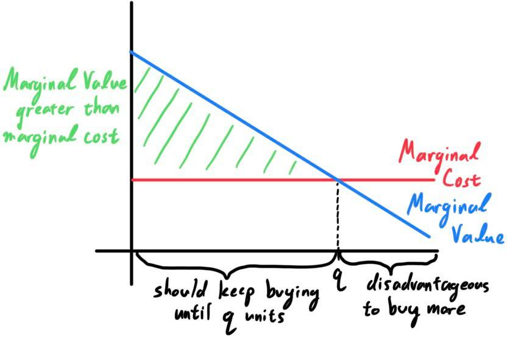
Additionally, when a supplier sells a good $G$ for price $P$, by rationality they are selling it because they believe that the value they gain by producing and selling a unit of $G$ is greater than that of the price $P$. For some reason I can't find a deeper reason for this than the qualitative description: a higher price will induce producers to supply a higher quantity to the market to maximize profits. I'm sure there is some reason concerning the marginal supply curve, but I have yet to figure this out for some time.
Supply Curves & Demand Curves
To formalize these concepts mathematically, we now introduce the demand and supply functions, with a simple property for each. The demand function $D_G$ of a certain good $G$ maps a certain price $P$ representing the price that consumers will buy a unit of $G$, and outputs the demand of $G$ in a quantity of $Q$ units.
\[D: P \longrightarrow Q\]
Due to the law of demand, this demand function is monotonically decreasing, i.e. the demand is inversely proportional to the price. We can roughly see why because an increase in the price that consumers will buy a unit of $G$ will cause them to buy less, due to an overall smaller marginal value.
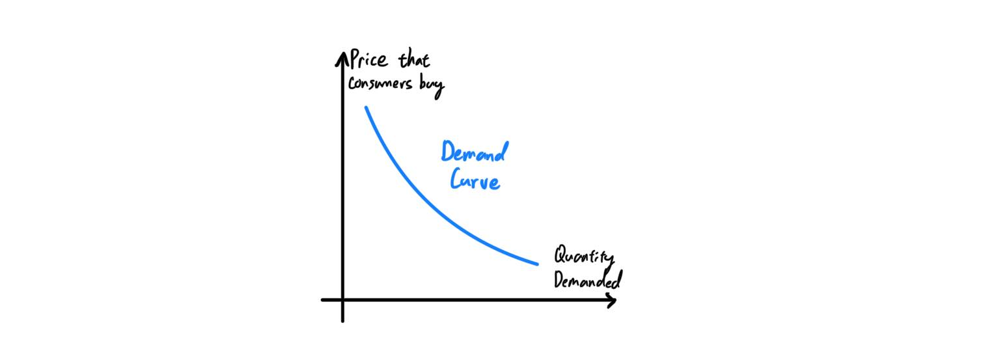
The supply function $S_G$ of a certain good $G$ maps a certain price $P$ representing the price that producers will sell a unit of $G$, and outputs the supply of $G$ in a quantity of $Q$ units.
\[S: P \longrightarrow Q\]
Due to the law of supply, this supply function is monotonically increasing, i.e. the supply is directly proportional to the price. We can roughly see why because an increase in the price that producers will sell a unit of $G$ will cause them to sell more, due to an overall greater profit margin.
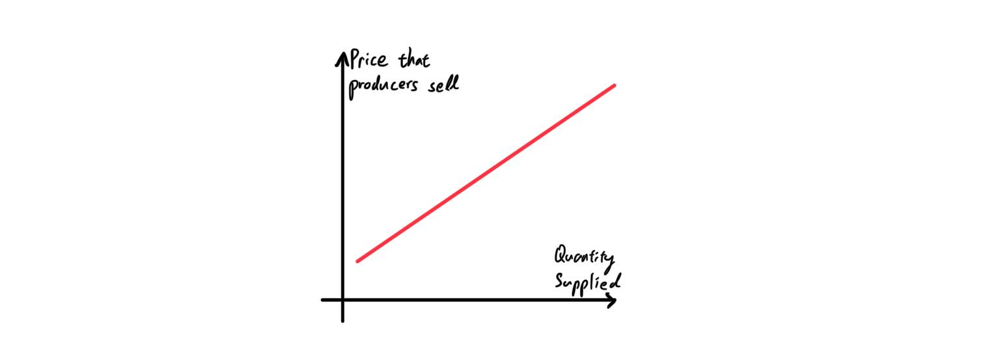
Note that this notation for the domains and codomains of both $D$ and $S$ may be misinterpreted to represent the same quantity, but this is not the case. The domain $P$ of $D$ is the price in which the consumers buy, while the domain $P$ of $S$ is the price in which the suppliers sell. The codomain $Q$ of $D$ is the quantity demanded, while the codomain $Q$ of $S$ is the quantity supplied.
Supply & Demand Curves Together and Equilibrium
In a market, we have both the sellers and the buyers, so it would make sense to put both curves in the same graph.
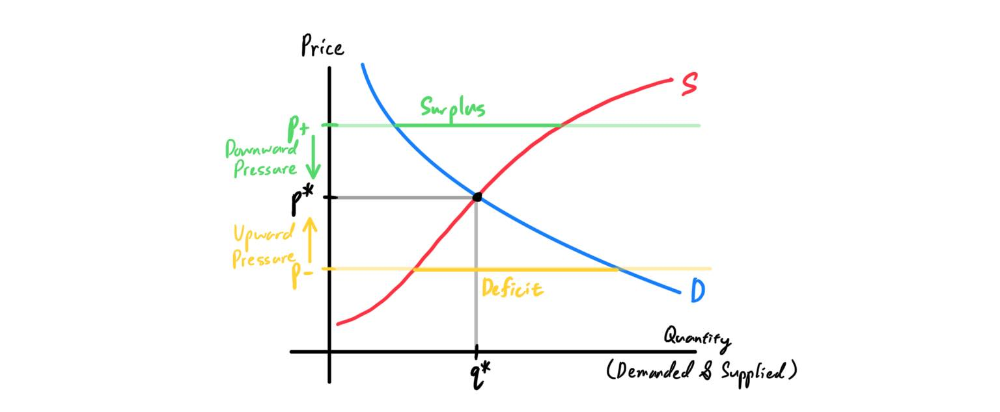
Now using both the laws of supply and demand, let us describe how market forces will act on the trading of goods.
- Assume that the price of good $G$ is $p_- < p$. Then, there will be a deficit of $G$. Consumers will compete to buy these, which will put upwards pressure on the price.
- Assume that the price of good $G$ is $p_+ > p$. Then, there will be a surplus of $G$. Producers will optimize their prices to sell, which wil put downwards pressure on the price.
Shifts in Supply and Demand
An increase in demand simply means that consumers are willing to pay more for the same quantity of a good $G$ (note that this is equivalent to saying that consumers are willing to buy less of $G$ for the same price). This results in an up-rightward shift in the demand curve.
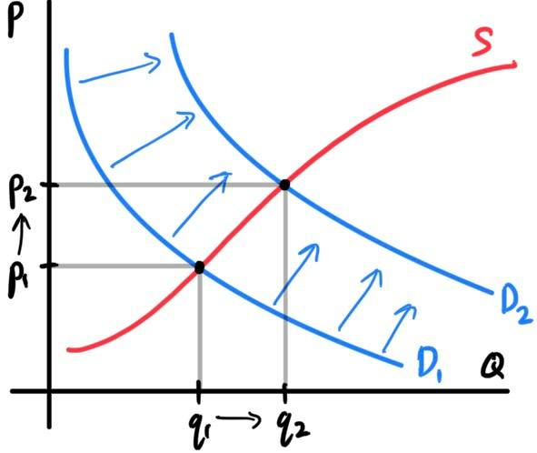
A change in demand describes the case when the consumers of a given good or service alter their means of consumption. Here are some examples of when demand changes (note that this shift in demand is different from a change inquantity demanded):
- A shift in population demographic could require the use for more wheelchairs and canes.
- A product mentioned in a popular Netflix show would increase demand for said product.
- The price of raw materials can increase, resulting in lower prices.
- War against Russia results in sanctions on oil imports into the U.S., decreasing the supply.
Market in Perfect Equilibrium
Let us construct a market from scratch, and with it the general principles that they follow. Assume that civilization has evolved enough to acquire specialization of labour. Let us have three entities, labeled $E_1, E_2, E_3$ with the following properties:
- Annually, $E_1$ produces $1000$ units of good $G_1$. $E_1$ has an annual requirement of $100$ units of $G_2$ and $0$ units of $G_3$.
- Annually, $E_2$ produces $800$ units of good $G_2$. $E_2$ has an annual requirement of $300$ units of $G_1$ and $400$ units of $G_3$.
- Annually, $E_3$ produces $900$ units of good $G_3$. $E_3$ has an annual requirement of $200$ units of $G_1$ and $500$ units of $G_2$.
- All entities $E_i$ have perfect communication with each other. That is, everybody know what everybody else is buying and selling for their respective prices.
- The price at which a unit is sold is the same for all suppliers. If two entities $E_1$ and $E_2$ sold a unit of good $G$ at different prices, by assumption $1$ all possible consumers would go to whoever is selling at the lower price, pressuring the other to lower its price to match.
- The price at which a unit is bought is the same for all consumers. If two entities $E_1$ and $E_2$ want to buy a unit of good $G$ at different prices, by assumption 1 all possible suppliers would go to whoever is buying at the higher price, pressuring the other to raise its bid to match.
- $E_j$ is willing to buy $G$: that is, the marginal value of an additional unit of $G_1$ is greater than the price.
- $E_i$ is willing to sell $G$: that is, the marginal cost of an additional unit of $G_1$ is less than the price.
- The (market) supply of $G_1$ is $1000$ units, since that is how much all the producers (just $E_1$ in this case) are willing to produce until its marginal costs of producing is greater than the price at which they sell. More specifically, since $E_1$ also consmues $300$ units, the supply in the exchange market between the three entities is $700$ units of $G_1$.
- The (market) demand of $G_1$ is also $1000$ units, since that is how much all the consumers ($E_1, E_2, E_3$) are willing to produce until its marginal value of buying is less than the price at which they buy. More specificaly, since $E_1$ also consumes $300$ units, the demand in the exchange market between the three entities is also $700$ units of $G_1$.
Fluctuations in Market Supply and Its Effects
If production is consistent, all is well and everyone lives happily ever after in this state of equilibrium. But with the actual fluctations that occurs in the real world (affected by climate, labor, war, disease, etc.), without loss of generality, $E_1$ may either underproduce or overproduce its optimal amount of $1000$ units of $G_1$.
We will first introduce a wrong interpretation that I have fallen for many times. The following below is a naive way of interpreting situations when there are fluctuations in supply and demand, which ignores all the concepts that was introduced previously.
- When $E_1$ produces $1200$ units of $G_1$ and uses $300$ units, then there are now $900$ units of $G_1$ that is left for sale in the market, so the market supply is $900$ units. The demand is still $700$ since the needs of entities $E_2$ and $E_3$ haven't changed. Therefore, this surplus of $200$ units is wasted and not bought because $E_2$ and $E_3$ do not need it anymore. It is as good as dead.
- When $E_1$ produces $800$ units of $G_1$ and uses $300$ units, then there are now $500$ units of $G_1$ that is left for sale in the market, so the market supply is $500$ units. The demand is still $700$ since the needs of entities $E_2$ and $E_3$ haven't changed. This shortage of $200$ units will cause distress, but nothing can be done about it within this economy.
- If the supply of good $G_1$ changes from $1000$ units to $1200$ units, then the supply curve will increase, causing the equilibrium price to fall to $0.8$ dollars at point $eq_2$ and the quantity demanded to increase. 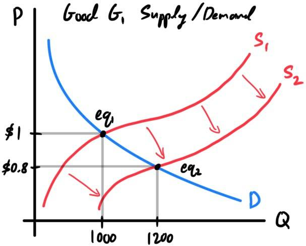 Note that since supply is a continuous process this change should happen continuously, but if for some reason this change in supply happens extremely fast, or if there is a restriction on the price to be 1 dollar, then the price/quantity supplied data will be at point $k$. In this moment, with the price fixed at $1$ dollar, the quantity demanded would naturally be $1000$, while the actual supply would be $1200$, leading to a surplus of $200$. Eventually, the price will drop down from $k$ to the equilibrium point $eq_2$. 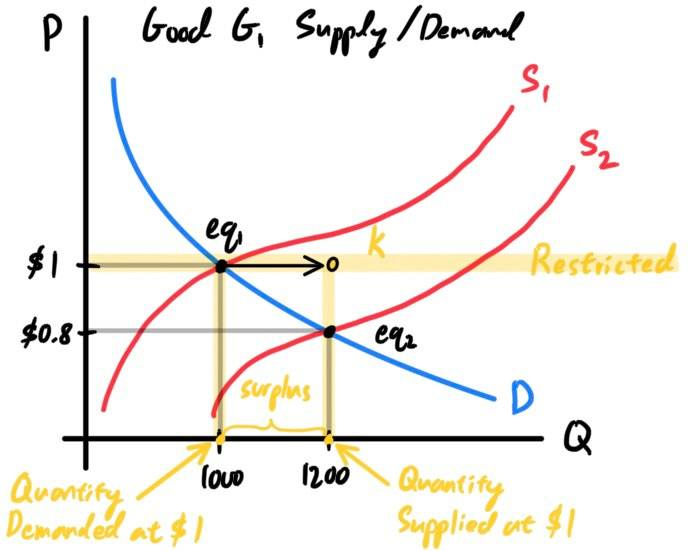
- If the supply of good $G_1$ changes from $1000$ units to $800$ units, then the supply curve will decrease, causing the equilibrium price to rise to $1.2$ dollars at the point $eq_2$ and the quantity demanded to decrease. 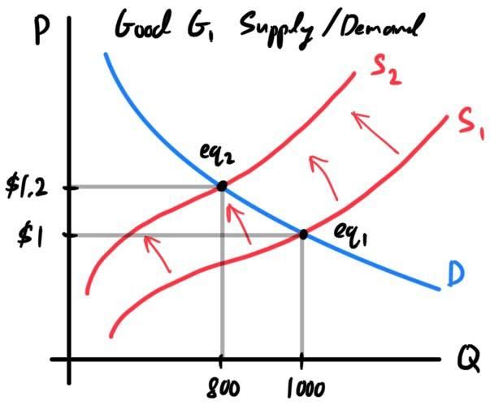 Again, this should happen continuously, but if for some reason this change in supply happens extremely fast, or if there is a restriction on the price to be 1 dollar, then the price/quantity supplied data will be at $k$. In this moment, with the price fixed at 1 dollar, the quantity demanded would be $1000$ while the actual supply would be $800$, leading to a surplus of $200$. Eventually, the price will rise from $k$ to the equilibrium point at $eq_2$. 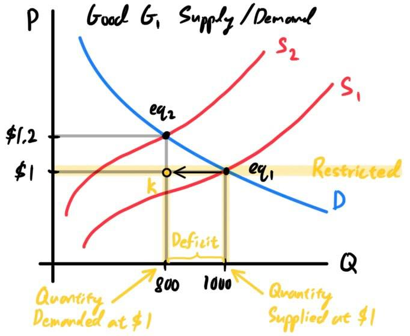
Finally, note that in this context (and in most contexts), the supply of a good really means the supply of a good that is available to trade within the market. Goods that are not in some market do not go by these laws of supply and demand. Examples include
- National oil reserves, which are not bought or sold and therefore do not contribute to the supply of an entity (in this case, a nation).
- Privately held stocks (RSU), which do not circulate in the market since they are held for long periods of time and are not sold.
Elasticities
In general, elasticity refers to the rate at which a value is affected by a change in another value. It is a mathematical way of describing how the supply and demand curves are "shaped" (i.e. are they steep? flat? curved? etc.). There are two types of elasticities:
- The price-elasticity of demand refers to how sensitive the quantity demanded is to a change in price.
- If a price change of $G$ leads to a greater change in quantity demanded, then $G$ is said to be elastic (demand curve becomes flatter). A perfectly elastic demand curve is flat.
- If a price change of $G$ leads to a smaller change in quantity demanded, then $G$ is said to be inelastic (demand curve becomes steeper). A perfectly inelastic demand curve is vertical.
- The price-elasticity of supply refers to how sensitive the quantity supplied is to a change in price.
- If a price change of $G$ leads to a greater change in quantity supplied, then $G$ is said to be elastic (supply curve becomes flatter). A perfectly elastic supply curve is flat.
- If a price change of $G$ leads to a smaller change in quantity supplied, then $G$ is said to be inelastic (supply curve becomes steeper). A perfectly inelastic supply curve is vertical.
- The elasticity of demand of insulin shots is low, since it is a necessary product, a consumer staple. A change in price will not cause consumers who need them to stop buying them.
- The elasticity of demand of computers is high, since it is not a necessary product; it is a discretionary product. A change in price will cause many consumers to stop buying them.
- The elasticity of supply of coffee is high, since a rise in price will cause suppliers to produce more of them.
- The elasticity of supply of grapes is low, since harvest is once a year, so a rise or fall in price will not change much of how they are produced.
Primary vs Secondary Markets
A distinction that should be know is between primary markets and secondary markets:
- The primary market is where securities or commodities are bought from an issuing body.
- The secondary market is where securities and commodities trade between consumers.
Bond Market
[Hide]
Suppose that entity $E_1$, the debtor, wants to borrow 1000 dollars from entity $E_2$, the creditor. There are a couple things we have to think about here:
Say that you lend the U.S. government 1000 dollars and they agree to pay you back in 10 years. Then you receive a 10-year bond worth 1000 dollars, with say, a 5% interest rate. The major components of the bond are listed:
Interest rates (the fed funds rate) heavily influence the demand, and therefore the price, of a bond. Recall that the fed funds rates acts as pretty much a "baseline interest rate" for all kinds of debt obligations throughout the nation. Since the option to lend money to the U.S. government (with a pretty much guarantee in payment back) is always available, banks would charge at lower interests to borrow from each other. This effective fed funds rate that banks use when borrowing is now the "minimum" interest rate that they will charge to consumers when lending (since to get profits their interest on lending must be greater than their interest on borrowing).
To be updated: Describe the process of how the fed funds rate affects the coupon rates in newly issued bonds.
Let's focus on entities $E_1$ and $E_2$, and say that they each invested $\$10,000$ into $Fed$ to buy $10$ $\$1,000$ 10-year bonds with an annual coupon rate of $10\%$. Therefore, they will receive a fixed-income of $\$100 \times 10 = \$1,000$ per year for the next 10 years. Now, say that the Fed issues $10$ new 10-year $\$1,000$ bonds (with same maturity date). A good thing to keep in mind is that whenever the Fed issues some new bonds, these new bonds determine the standards for how much fixed-income securities are worth.
For example, suppose that you are an investor who wants to purchase a bond, which is redeemable in 10 years for its face value of $\$1,000$ and pays an annual coupon of $5\%$ on the face value (interest payments of $\$50$ per year)? For multiple prevailing interest rates $r$, we can calculate the present value and the net present value of these investments. Remember, that these rates $r$ represent the absolute guaranteed return on investments, so investing in a fixed-income security with interest rates less than $r$ counts as a loss (in present value).
Quick refresher on annualized returns. If we make an investment of $C$ dollars and get a profit of $P$ dollars after $N$ years, then we can say that we got a total return of $P/C - 1$, represented as a percentage. But if we would like to represent it as a compounded annual return, we can calculate the annualized return of this investment: \[\sqrt[N]{\frac{P}{C}} - 1\] Now we can introduce an extremely useful property of the YTM of a bond: The YTM represents the annualized rate of return of a bond, given that all coupons are reinvested at a yield equal to the YTM, and that the bond is held to maturity.
Suppose we have a bond with face value of $\$100$ and coupon rate of $7\%$, implying coupon payments of $\$7$/year, and the bond is reedemable in 5 years. We see that it has a market price of $\$106.62$. We can compute the YTM by computing the $r$ in the equation: \[\$106.62 = \frac{7}{(1+r)} + \frac{7}{(1+r)^2} + \frac{7}{(1+r)^3} + \frac{7}{(1+r)^4} + \frac{107}{(1+r)^5}\] We find that $YTM = 5.46\%$. Calculations are not important here since we do it numerically anyways. Remember that this means that within prevailing interest rates of $5.46\%$, this bond would be worth exactly $\$0$. Furthermore, we can also claim that the annualized rate of return of this bond, given that all coupons are reinvested at the same yield, after 5 years is $5.46\%$. To see what this means, follow the steps:
It is best to explain through an example: Suppose the Treasury seeks to raise $\$9$ million in two-year notes with a $5\%$ coupon. Entities can bid up to 30 days in advance of the auction, and let us assume that the submitted bids are as follows:
- If $E_2$ lends $E_1$ the money, then how likely is it that $E_1$ will pay it back? This likelihood is referred to as $E_1$'s creditworthiness.
- Since there is always a nonzero chance that $E_1$ will default (fail to pay back) on the debt, it doesn't make sense to expect the 1000 dollars back; then there is no point in lending out the money at all. $E_2$ must get more than 1000 dollars as a reward for taking on the risk in addition to lending. This leads to the concept of an interest rate.
Components of Bonds
When the U.S. government issues bonds, investors buy them (the role of selling bonds have been explained in monetary policy). The investors lend bond issuers money, and in return, bond issuers agree to pay investors interest on bonds through the life of the bond and to repay the face value of bonds upon maturity.
Say that you lend the U.S. government 1000 dollars and they agree to pay you back in 10 years. Then you receive a 10-year bond worth 1000 dollars, with say, a 5% interest rate. The major components of the bond are listed:
- The face value of the bond is $\$1000$.
- The coupon rate is the $5\%$ rate of interest the bond issuer will pay on the face value of the bond.
- The interest payments, which are fixed, are the payments that the bondholder will receive every year, calculated as \[\text{Face Value } \times \text{ Coupon Rate } = \text{ Interest Payments} \] The interest payment for this bond is $5\% \times \$1000 = \$50$ every year.
Bond Pricing: Interest Rates and Inflation
Now, we can integrate our knowledge of markets with that of bonds. Let there be entities $E_1, \ldots, E_n$ each owning some arbitrary number of bonds from the federal government, labeled $Fed$. As in all markets, the equilibrium price of certain bonds are determined by shift in supply and demand of the bond.
Interest rates (the fed funds rate) heavily influence the demand, and therefore the price, of a bond. Recall that the fed funds rates acts as pretty much a "baseline interest rate" for all kinds of debt obligations throughout the nation. Since the option to lend money to the U.S. government (with a pretty much guarantee in payment back) is always available, banks would charge at lower interests to borrow from each other. This effective fed funds rate that banks use when borrowing is now the "minimum" interest rate that they will charge to consumers when lending (since to get profits their interest on lending must be greater than their interest on borrowing).
To be updated: Describe the process of how the fed funds rate affects the coupon rates in newly issued bonds.
Let's focus on entities $E_1$ and $E_2$, and say that they each invested $\$10,000$ into $Fed$ to buy $10$ $\$1,000$ 10-year bonds with an annual coupon rate of $10\%$. Therefore, they will receive a fixed-income of $\$100 \times 10 = \$1,000$ per year for the next 10 years. Now, say that the Fed issues $10$ new 10-year $\$1,000$ bonds (with same maturity date). A good thing to keep in mind is that whenever the Fed issues some new bonds, these new bonds determine the standards for how much fixed-income securities are worth.
- If these bonds have a $20\%$ interest rate, this translates to fixed payments of $\$200$ per year. Remember, these are the new standards for bonds now: Any 10-year fixed-income security that pumps out $\$200$/year is worth $\$1,000$, according to the Fed. Therefore, with this standard, any 10-year fixed-income security that pumps out $\$100$/year must be worth twice as little: $\$500$. Therefore, this new standard will cause the demand for $\$100$ fixed-income securities to drop to $\$500$. 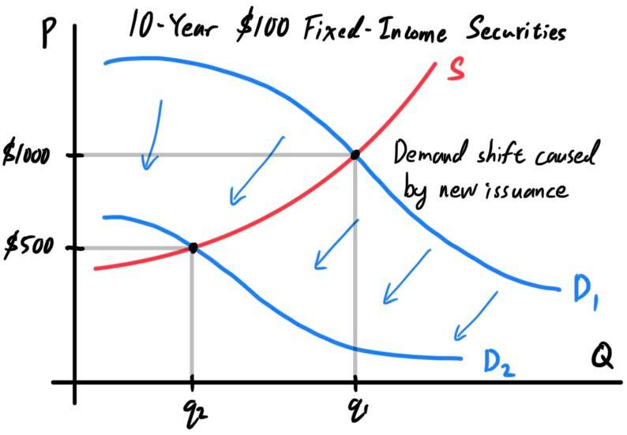
- If these bonds have a $5\%$ interest rate, this translates to fixed payments of $\$50$ per year. So, the new standard for bond is: Any 10-year fixed-income security that pumps out $\$50$ a year is worth $\$1,000$. Therefore, with this standard, any 10-year fixed-income security that pumps out $\$100$/year must be worth twice as much: $\$2,000$. Therefore, this new standard will cause the demand for $\$100$ fixed-income securities to rise to $\$2,000$. 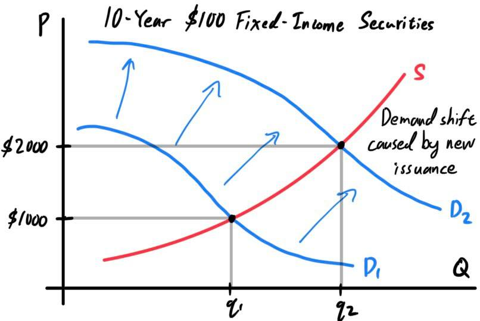
- In the first scenario, the market balances out such that buying a 10-year fixed-income security generating $\$100$/year for $\$500$ is the same as buying a 10-year fixed-income security generating $\$200$/year for $\$1,000$.
- In the second, the market balances out such that buying a 10-year fixed-income security generating $\$50$/year for $\$1000$ is the same as buying a 10-year fixed-income security generating $\$100$/year for $\$2,000$.
Bond Valuation: Present Value of Future Cash Flows (DCF)
When we are valuing a bond, we are basically trying to answer the question: How much would an investor to pay to purchase a bond (of certain type) today? We can use discounted cash flow (DCF) analysis for this. To compute this bond value (and the values of most other financial assets), we just have to find out the present value of the future income stream discounted at the required rate of return. Let us have a bond with
- face value of $F$,
- coupon rate that determines the annual interest payments to be $C$,
- $N$ years until maturity. Note that we can value bonds that have already given out coupon payments. For example, a 10-year bond that has been issued two years ago will have 8 more coupon payments, but we can interpret this as a 8-year bond with a fixed cash flow with the standard of a current dollar.
- a required rate of return of $r$, which is the market interest rate; that is, the interest rate of bonds within the market. In other words, we are assuming that the Fed will consistently issue bonds with interest rate $r$ for the duration until maturity. The option to invest in bonds with interest $r$ is always available to us.
For example, suppose that you are an investor who wants to purchase a bond, which is redeemable in 10 years for its face value of $\$1,000$ and pays an annual coupon of $5\%$ on the face value (interest payments of $\$50$ per year)? For multiple prevailing interest rates $r$, we can calculate the present value and the net present value of these investments. Remember, that these rates $r$ represent the absolute guaranteed return on investments, so investing in a fixed-income security with interest rates less than $r$ counts as a loss (in present value).
- If $r = 3\%$, then the value of the bond is \[P = \bigg( \sum_{i=1}^{10} \frac{50}{(1.03)^i} \bigg) + \frac{1000}{(1.03)^{10}} = \$1170.60 \implies NPV = \$170.60\] We would get a profit from this investment because prevailing rates (i.e. guaranteed rate of return) are much lower than the rate of our investment.
- If $r = 4\%$, then the value of the bond is \[P = \bigg( \sum_{i=1}^{10} \frac{50}{(1.04)^i} \bigg) + \frac{1000}{(1.04)^{10}} = \$1081.11 \implies NPV = \$81.11\] We would get a profit from this investment because prevailing rates are lower than the rate of our investment.
- If $r = 5\%$, then the value of the bond is \[P = \bigg( \sum_{i=1}^{10} \frac{50}{(1.05)^i} \bigg) + \frac{1000}{(1.05)^{10}} = \$1000 \implies NPV = \$0\] We would get nothing from this investment because prevailing rates are equal to the rate of our investment.
- If $r = 6\%$, then the value of the bond is \[P = \bigg( \sum_{i=1}^{10} \frac{50}{(1.06)^i} \bigg) + \frac{1000}{(1.06)^{10}} = \$926.40 \implies NPV = -\$75.60\] We would lose money from this investment because prevailing rates are higher than the rate of our investment.
- If $r = 7\%$, then the value of the bond is \[P = \bigg( \sum_{i=1}^{10} \frac{50}{(1.07)^i} \bigg) + \frac{1000}{(1.07)^{10}} = \$859.53 \implies NPV = -\$140.47\] We would lose money from this investment because prevailing rates are much higher than the rate of our investment.
Bond Yield: Current Yield & Yield to Maturity (YTM)
If the current price of a bond is given, together with details of coupon and redemption date, then this information can be used to compute the current yield, which is the percentage return based on the price you have bought it:
\[\text{Current Yield } = \frac{\text{Interest Payment}}{\text{Price}}\]
However, this valuation is limited in multiple ways. First, they don't measure the value of reinvested interest. The internal rate of return (IRR), or the yield to maturity (YTM), of an investment in a bond takes this into account (the IRR is a more general term covering other investments, so we will use YTM in this context). Given a bond that is redeemable in $N$ years producing a fixed-income of $C$ (which is the coupon rate time the face value $F$), priced at $P$, the YTM is the value of $r$ satisfying the following equation
\begin{align*}
P & = \frac{C}{(1+r)} + \frac{C}{(1+r)^2} + \ldots + \frac{C}{(1+r)^{N}} + \frac{F}{(1+r)^N} \\
& = \bigg(\sum_{i=1}^N \frac{C}{(1+r)^i} \bigg) + \frac{F}{(1+r)^N}
\end{align*}
What does this YTM actually mean? The IRR (and YTM) of an investment is the rate of return that sets the net present value of all cash flows (both positive and negative) equal to $0$. More colloquially, the YTM tells us what the prevailing interest rate would have to be such that our investment is worth exactly $0$. This process is actually the inverse of what we did last subsection:
- Previously, we look at the given prevailing interest rates $r$ and compute the value/expected price of a bond.
- Here, we look at the price of a bond and determine what prevailing interest rates $r$ would there need to be for us to profit, break even, or lose on this investment.
Quick refresher on annualized returns. If we make an investment of $C$ dollars and get a profit of $P$ dollars after $N$ years, then we can say that we got a total return of $P/C - 1$, represented as a percentage. But if we would like to represent it as a compounded annual return, we can calculate the annualized return of this investment: \[\sqrt[N]{\frac{P}{C}} - 1\] Now we can introduce an extremely useful property of the YTM of a bond: The YTM represents the annualized rate of return of a bond, given that all coupons are reinvested at a yield equal to the YTM, and that the bond is held to maturity.
Suppose we have a bond with face value of $\$100$ and coupon rate of $7\%$, implying coupon payments of $\$7$/year, and the bond is reedemable in 5 years. We see that it has a market price of $\$106.62$. We can compute the YTM by computing the $r$ in the equation: \[\$106.62 = \frac{7}{(1+r)} + \frac{7}{(1+r)^2} + \frac{7}{(1+r)^3} + \frac{7}{(1+r)^4} + \frac{107}{(1+r)^5}\] We find that $YTM = 5.46\%$. Calculations are not important here since we do it numerically anyways. Remember that this means that within prevailing interest rates of $5.46\%$, this bond would be worth exactly $\$0$. Furthermore, we can also claim that the annualized rate of return of this bond, given that all coupons are reinvested at the same yield, after 5 years is $5.46\%$. To see what this means, follow the steps:
- In year 0, we have invested $\$106.62$.
- In year 1, we receive a coupon payment of $\$7$, which we invest immediately at the rate of $5.46\%$. Over the next 4 years until the bond matures, the $\$7$ compounds to $\$8.66$.
- In year 2, we receive a coupon payment of $\$7$, which we invest immediately at the rate of $5.46\%$. Over the next 3 years until the bond matures, the $\$7$ compounds to $\$8.21$.
- In year 3, we receive a coupon payment of $\$7$, which we invest immediately at the rate of $5.46\%$. Over the next 2 years until the bond matures, the $\$7$ compounds to $\$7.79$.
- In year 4, we receive a coupon payment of $\$7$, which we invest immediately at the rate of $5.46\%$. Over the next 1 year until the bond matures, the $\$7$ compounds to $\$7.38$.
- In year 5, we receive a coupon payment of $\$7$ and the face value of $\$100$. The bond matures.
Primary Issuance: Treasury Bill Auctions
Treasury bills, notes, and bonds are issued through an electronic bill Dutch auction. A Dutch auction is an auction in which the price of something offered is determined after taking in all bids to arrive at the highest price at which the total offering can be can be sold. The bond auction is open to the public, both institutional and individual investors. 24 primary dealers (financial institutions and brokerages) are required to participate. It is divided into competitive and noncompetitive bids.
- Competitive bids are bids where the buyer specifies the rate that they will accept. It is mainly submitted by institutional investors, and competitive bidding is limited to $35\%$ of the offering amount for each bidder.
- Noncompetitive bidding are bids where the buyer agrees to accept the rate determined at the auction (same rate as that determined by competitive bids). It is submitted often by individuals, and noncompetitive bidding is limited to $\$5$ million per auction.
It is best to explain through an example: Suppose the Treasury seeks to raise $\$9$ million in two-year notes with a $5\%$ coupon. Entities can bid up to 30 days in advance of the auction, and let us assume that the submitted bids are as follows:
- $\$1$ million at $4.79\%$
- $\$2.5$ million at $4.85\%$
- $\$2$ million at $4.96\%$
- $\$1.5$ million at $5\%$
- $\$3$ million at $5.07\%$
- $\$1$ million at $5.1\%$
- $\$5$ million at $5.5\%$
Types of Bonds & Creditworthiness of Issuers
We can categorize bonds by the entities that issue them. The type of entity also determine the general level of creditworthiness of the issuers: the government is deemed to be very creditworthy, while corporations are riskier.
- Corporate bonds are issued by companies. Companies issue bonds rather than seek bank loans for debt financing in many cases because bond markets offer more favorable terms and lower interest rates.
- Municipal bonds are issued by states and municipalities (local governments).
- Government bonds, or treasury bonds, are issued by the U.S. Treasury.
- Agency bonds are those issued by government-affiliated organizations (e.g. Fannie Mae).
- Zero-coupon bonds do not pay coupon payments are instead are issued at a discount to their par value that will generate a return once the bondholder is paid the full face value when the bond matures (e.g. U.S. Treasury bills).
- Convertible bonds are bonds that gives the bondholder the option to convert their debt into stock at some point, depending on conditions.
- Reverse convertible bonds are bonds that now give the issuer the option to convert.
- Callable bonds is one that can be called back by the company before it matures, for instance when interest rates become too disadvantageous for the issuers.
- Puttable bonds allow the bondholders to put (or sell) the bond back to the company before maturity.
Stock Market
[Hide]
Stocks are a type of security that represents a share in the ownership of a corporation. That is, owning a stock is equivalent to owning its relative position in the company and its profits, and possibly voting rights. But what exactly does it mean to "own" a company? To explain this, we can interpret a business to be some sort of entity with input and output cash flows.
For early-stage businesses, these are mainly funded by venture capital firms and angel investors (but is not limited to them) through different rounds roughly ordered: seed round, Series A, Series B, Series C, etc. After due diligence, these venture firms, as early investors, may get extra privileges, such as anti-dilution protection, guaranteed board seats, liquidation preferences, priority dividends.
Note that upon multiple rounds of issuance, more and more stocks will circulate through more hands, causing stock dilution. No investor would want this and therefore stocks must be issued carefully. At this point, the ownership of a company is held within the hands of private individuals and firms. 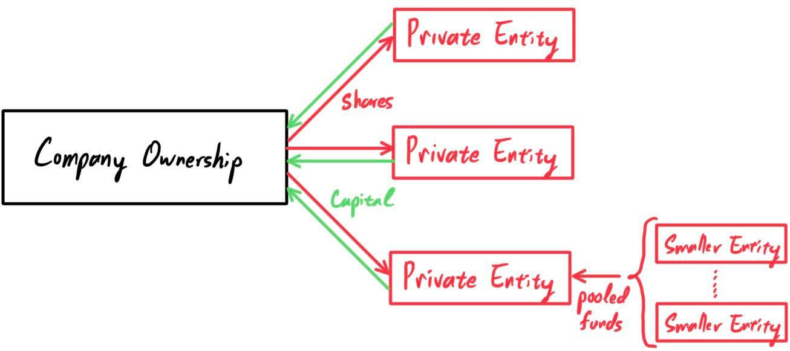 One final characteristic to note is the nominal value, or par value, of a company's stock. Like the face value of a bond when issued, the nominal value of the stock is its stated value. It is an arbitrary value assigned for balance sheet purposes when the company is issuing share capital, and is typically $\$1$ or less. It has little to no bearing on the stock's market price, so no need to worry about this number.
We can draw the supply and demand curves for a certain company's stock. We can treat stocks as goods, with the company being the supplier and public investors as the consumers.
- The majority of the cash flows flowing into the business is the revenue earned from the goods and services that the business provides.
- The majority of the cash flows flowing out of the business are the costs, such as COGS, employment compensation & benefits, operations, lawsuits, taxes, interest on debts, etc.
Classification of Stocks
The ownership of a stock really possible rights to earn dividends and possible rights to vote. There is a much greater variety of stocks, but we will go through common ones.
- Common stocks are the most common type of stock. Common stock shareholders receive dividends in proportion to the amount of profit generated each year, and they have voting rights. They are usually the lowest priority over a company's income, after the creditors and preferred stock shareholders.
- Preferred stock are much less common and liquid. Preferred stock shareholders receive fixed dividends and no voting rights. They receive payments after bondholders but before common shareholders.
- Voting Power. Nonvoting shares have no voting power while executive shares can be worth 10 votes.
- Payment Priority. Deferred shares are set as a lower priority for dividends and corporate assets.
- Cumulative. Cumulative shares can accumulate dividend payments that have been deferred due to low profits in the past.
- Convertible. Convertible shares can be converted into different forms of financial assets(e.g. preferred shares may be convertible into common ones, common shares may be convertible into corporate bonds).
Primary Stock Market: Private Funding
A company gets its funding from debt (e.g. bonds) and equity (stocks). If the prospect of paying interest on debts are not suitable, a company may issue stocks to investors. In other words, the company is selling parts of itself in exchange for capital. The number of shares, type of shares, and the prices for these shares is entirely determined by the seller and buyer. For example, a business may need to raise $\$100$ million in capital and can choose to issue 10 million shares at $\$10$ each.
For early-stage businesses, these are mainly funded by venture capital firms and angel investors (but is not limited to them) through different rounds roughly ordered: seed round, Series A, Series B, Series C, etc. After due diligence, these venture firms, as early investors, may get extra privileges, such as anti-dilution protection, guaranteed board seats, liquidation preferences, priority dividends.
Note that upon multiple rounds of issuance, more and more stocks will circulate through more hands, causing stock dilution. No investor would want this and therefore stocks must be issued carefully. At this point, the ownership of a company is held within the hands of private individuals and firms. 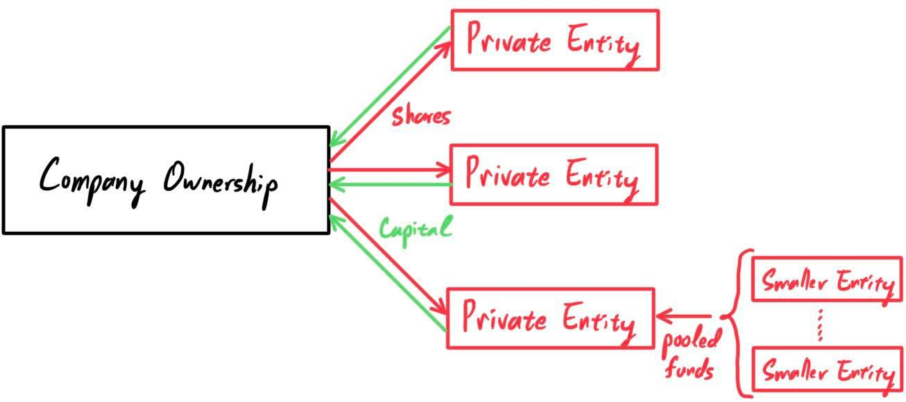 One final characteristic to note is the nominal value, or par value, of a company's stock. Like the face value of a bond when issued, the nominal value of the stock is its stated value. It is an arbitrary value assigned for balance sheet purposes when the company is issuing share capital, and is typically $\$1$ or less. It has little to no bearing on the stock's market price, so no need to worry about this number.
Primary Stock Market: Public Offerings & Underwriting
Perhaps after a few years, the firm has grown to the point where funding on an even larger scale to support even more expansion is needed. Private sources may be too restrictive or small, and so companies may need to tap into the capital of the general public. Thus, they can do a public offering, an issuance of the stock to the general public rather than private entities. This process of an initial public offering (IPO) and the company being listed on a stock exchange is what is referred to as a company "going public."
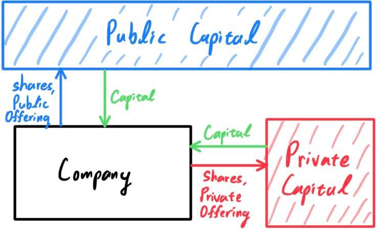
Investment banks, through underwriting services, faciliate public offerings.
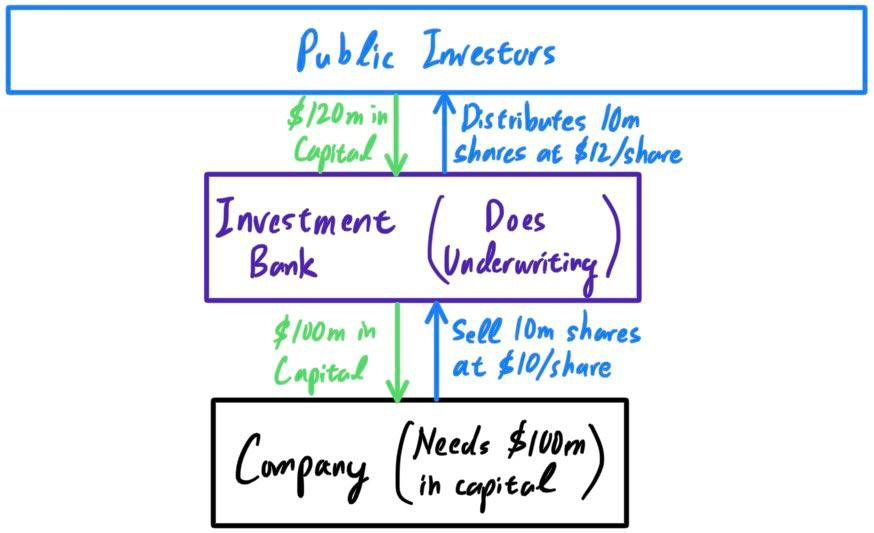
Throughout the years, companies may do the following:
- Additional stock issuance to both public and private investors.
- Stock splits to increase liquidity if the stock price is too high or for other reasons. Reverse stock splits may also be done.
- Stock buyback where the company uses its institutional funds to buy back shares from the market to incrase its treasury shares. This may be used for anti-dilution purposes or to retain voting control. We can think of these as the opposite as a stock issuance, since treausry shares do not have dividend rights nor voting rights.
- Issue restricted stock units (RSUs) to employees. The grant is restricted because it is subject to a vesting schedule, which can be based on length of employment or performance goals.
- Authorized shares refers to the maximum number of shares that a corporation is legally permitted to issue. Companies don't usually get close to this number due to market conditions, which will be explained later.
- Shares issued refers to the total number of shares issued, including all public shares, private shares, and treasury shares.
- Outstanding shares refer to a compnay's stock currently held by all shareholders, both public and private shares (including RSUs). It does not include treasury stocks however.
- Floating shares are the shares considered available for the general public. Moreoever, the floating percentage represents the portion of outstanding shares that are floating: \[\text{Floating Percentage } = \frac{\text{Floating Shares}}{\text{Shares Outstanding}}\]
Brokerages and Market Makers
Trader, Broker, Liquidity provider, Market maker
NYSE is a stock exchange that leases a space to different market makers (banks, hedge funds). It also makes money thorugh fees from companies to be listed on NYSE. If a crash happens (i.e. a market maker buys a stock and it tanks before they can sell it), then the market makers get screwed.
Stock Prices & Market Value
Now, we get to the interesting part. We can construct a market of $n$ entities $E_1, \ldots, E_n$, with each entity having ownership of $c_1, \ldots, c_n$ stocks, where $c_i \geq 0$. Remember at the most fundamental level, owning a stock is like owning the profits and voting power of a part of a company, which we can represent as a giant box that churns out cash. By owning one share, we own a part of that box. In this context, we will observe the dynamics of public markets.
We can draw the supply and demand curves for a certain company's stock. We can treat stocks as goods, with the company being the supplier and public investors as the consumers.
- The demand curve says: as the price for a stock, i.e. a piece of the company, increases the quantity demanded by the market (consumers) will decrease because the costs of buying the stock will outweigh the marginal value of the share. There is a very important distinction to make here between stocks and other type of goods. Unlike consumable goods which we can clearly observe a diminishing marginal value (drinking 1 can of soda vs 2 cans vs 3 cans vs...), stocks do not seem to have any diminishing marginal value. That is, if I buy 10 shares, I expect to get precisely 10 times the profit than if I bought just 1 share. The value is not diminishing, so why is the demand curve monotonically decreasing? That is because it is not diminishing for an individual, but if we look at a market of many individuals, they all have different interpretations of what the marginal value of the stock is. Individual $A$ may interpret the marginal value as $\$10$, while $B$ sees it as worth $\$8$, and $C$ sees $\$6$. All three marginal utility curves would be horizontal, but if we take the market utility, we can see that it is decreasing (e.g. at the price of $\$7$, a share is attractive to $C$ but not $A, B$, and at $\$9$, a share is attractive to $B, C$ but not $A$). Buying an infinite number of shares is not realistic, so let us assume that each person has $\$25$ worth to invest. 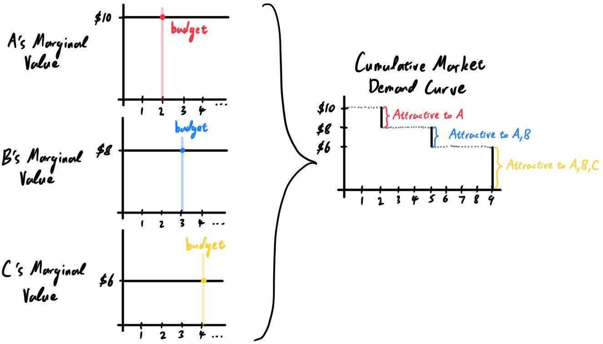 We can clearly see that the sum of these individual horizontal marginal value functions summed up produces a monotonically decreasing marginal value function and a monotonically decreasing demand curve for the total market.
- The supply curve is simpler to interpret, since the only supplier is the issuing company (or whatever underwriting investment banks). By the law of supply, we can interpret that if the worth of the company's shares increases, then it would be logical for the company to issue more shares, all else being the same. This interpretation may be too oversimplistic, since we have to account for investor relations, dilution, and other factors, but it will do for now to justify that the supply curve of a stock is monotonically increasing.
- The demand (not quantity demanded) of a company's shares can be changed from news, world events, production, and such, which occurs often and may even violently shift the outlook of the business.
- Unlike certain goods that are produced continuously, a company's floating shares will not change unless there is a new issuance or a private investors sells shares at market price. Therefore, supply (not quantity supplied) does not change easily.
- If the demand increases, then the shift in the demand curve raises the equilibrium price to $p_2^*$, which raises the price of the stock. The quantity demanded/supplied also increases to $q_2^*$, but this desire to increase quantity cannot be met due to other factors. Therefore, we can interpret this case as such: The increase in demand can change the price accordingly, but the increase in desired quantity is offset by other factors (not being able to issue stocks freely). 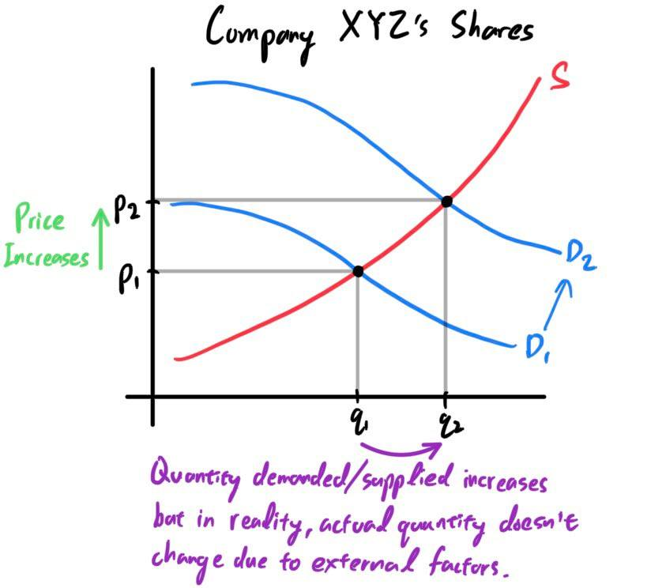
- If the supply increases, then this is much simpler to explain. Due to dilution, one stock now represents ownership of a smaller portion of the company, driving the price down. The equilibrium (optimal) quantity demanded and supplied increases due to this higher supply, which is reflected in the reality that there are more more shares issued now. 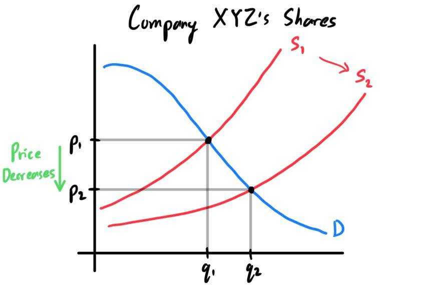
Commodities Market
[Hide]Derivatives Market
[Hide]